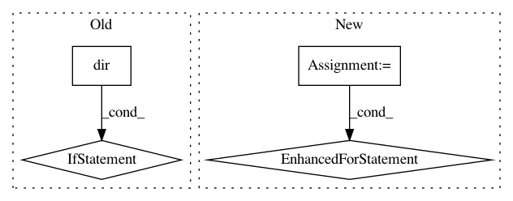

491e8b85794d816738f1dacd3b28486f47850f10,scipy/sparse/tests/test_base.py,Test64Bit,test_resiliency_random,#Test64Bit#,3612
Before Change
instance.teardown()
for cls in self.TEST_CLASSES:
for method_name in dir(cls):
if method_name.startswith("test_"):
msg = self.SKIP_TESTS.get(method_name)
yield dec.skipif(msg, msg)(check), cls, method_name
if __name__ == "__main__":
run_module_suite()
After Change
yield t
def test_resiliency_random(self):
for t in self._check_resiliency(random=True):
yield t
def test_resiliency_all_32(self):
for t in self._check_resiliency(fixed_dtype=np.int32):
yield t
In pattern: SUPERPATTERN
Frequency: 3
Non-data size: 4
Instances
Project Name: scipy/scipy
Commit Name: 491e8b85794d816738f1dacd3b28486f47850f10
Time: 2014-02-01
Author: pav@iki.fi
File Name: scipy/sparse/tests/test_base.py
Class Name: Test64Bit
Method Name: test_resiliency_random
Project Name: arnomoonens/yarll
Commit Name: b2f4c901679bd175a53ab35ffa9de1514584a03f
Time: 2018-03-15
Author: arno.moonens@gmail.com
File Name: environment/registration.py
Class Name:
Method Name: make
Project Name: SpiNNakerManchester/sPyNNaker
Commit Name: 6a968dc9a3faad2037bfd1a8f12b038a368eee4d
Time: 2018-02-20
Author: christian.brenninkmeijer@manchester.ac.uk
File Name: spynnaker/pyNN/models/neuron/abstract_population_vertex.py
Class Name: AbstractPopulationVertex
Method Name: initial_values